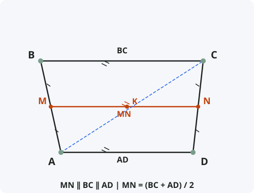

Средняя линия трапеции
Формулировка
Средняя линия трапеции — отрезок, соединяющий середины её боковых сторон, — параллельна основаниям и равна их полусумме.
Обозначения
Пусть дана трапеция ABCD с основаниями AD и BC (AD ∥ BC).
AB и CD — боковые стороны.
M — середина боковой стороны AB (AM = MB).
N — середина боковой стороны CD (CN = ND).
MN — средняя линия трапеции.
Тогда: MN ∥ AD ∥ BC и MN = (BC + AD) / 2

Доказательство
Теорема доказана.
Следствия из теоремы
- Средняя линия трапеции делит пополам любой отрезок, соединяющий точки на основаниях и проходящий через точку пересечения диагоналей.
- Площадь трапеции равна произведению средней линии на высоту: S = MN · h.
- Средняя линия трапеции делит её на две трапеции с равными высотами, но разными площадями.
- Если в трапеции средняя линия равна одному из оснований, то другое основание равно нулю (трапеция вырождается в треугольник).
- Теорема о средней линии трапеции — обобщение теоремы о средней линии треугольника (когда одно основание равно 0).
Примеры применения
Пример 1. Основания трапеции равны 8 см и 12 см. Найдите длину средней линии.
Решение: MN = (8 + 12) / 2 = 20 / 2 = 10 см.
Пример 2. Средняя линия трапеции равна 15 см, одно из оснований — 10 см. Найдите другое основание.
Решение: 15 = (10 + x) / 2 ⇒ 30 = 10 + x ⇒ x = 20 см.
Пример 3. В трапеции ABCD основания AD = 18, BC = 6. Точка M — середина AB, точка N — середина CD. Найдите длину отрезка MN.
Решение: MN = (6 + 18) / 2 = 24 / 2 = 12.
Историческая справка
Теорема о средней линии трапеции была известна ещё древнегреческим математикам. Она является прямым следствием теоремы Фалеса и свойств средней линии треугольника.
Евклид в «Началах» не формулирует эту теорему в явном виде, но использует её при доказательстве других утверждений о площадях четырёхугольников.
В современной геометрии теорема о средней линии трапеции — одна из базовых при изучении четырёхугольников и часто используется в задачах на вычисление площадей.
Интересные факты
- Средняя линия трапеции — единственный отрезок в трапеции, длина которого выражается через основания без дополнительных данных.
- В любой трапеции точка пересечения диагоналей, точка пересечения продолжений боковых сторон и середины оснований лежат на одной прямой.
- Средняя линия трапеции делит её высоту пополам.
- Формула площади трапеции S = m · h (где m — средняя линия) аналогична формуле площади прямоугольника S = a · h.
- В архитектуре и строительстве средняя линия трапеции используется при расчёте площадей трапециевидных элементов (фронтонов, скатов крыш).